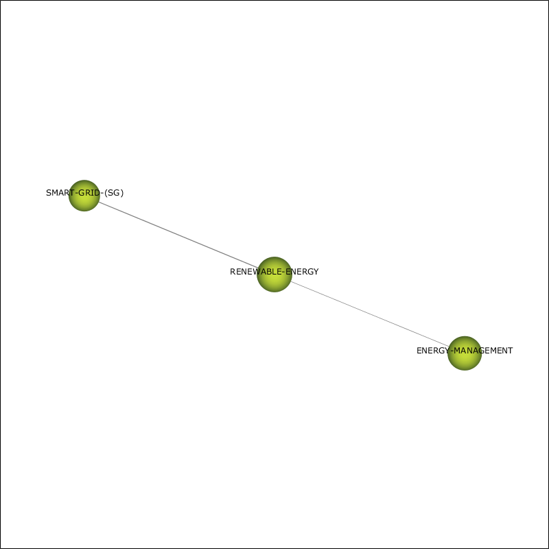

SciMAT report - subperiod 1995-2015 - cluster RENEWABLE-ENERGY
Cluster info:
- Name: RENEWABLE-ENERGY
- Density: 6.55
- Densisty range: 0.18
- Centrality: 0.41
- Centrality range: 0.24
Cluster network:

Internal links:
Internal links
| Node A |
Node B |
Weight |
| RENEWABLE-ENERGY |
ENERGY-MANAGEMENT |
0.07 |
| RENEWABLE-ENERGY |
SMART-GRID-(SG) |
0.12 |
External links:
External links
| Node A |
Cluster node A |
Node B |
Cluster node B |
Weight |
| DATA-CENTERS |
CLOUD-COMPUTING |
RENEWABLE-ENERGY |
RENEWABLE-ENERGY |
0.02 |
| RENEWABLE-ENERGY |
RENEWABLE-ENERGY |
GREEN-COMPUTING |
CLOUD-COMPUTING |
0.01 |
| RENEWABLE-ENERGY |
RENEWABLE-ENERGY |
ENERGY-EFFICIENCY |
CLOUD-COMPUTING |
0.01 |
| RENEWABLE-ENERGY |
RENEWABLE-ENERGY |
GREEN-IT |
INFORMATION-SYSTEMS |
0 |
Documents associated with the cluster
unionDocuments (100 first documents with highest impact)
- EROL-KANTARCI, M, MOUFTAH, HT, Energy-efficient Information And Communication Infrastructures In The Smart Grid: A Survey On Interactions And Open Issues. Ieee Communications Surveys And Tutorials 17:1 179-197 (2015). Times cited: 315
- ORó, E, DEPOORTER, V, GARCIA, A, SALOM, J, Energy Efficiency And Renewable Energy Integration In Data Centres. Strategies And Modelling Review. Renewable & Sustainable Energy Reviews 42:null 429-445 (2015). Times cited: 206
- GUO, YX, GONG, YM, FANG, YG, KHARGONEKAR, PP, GENG, XJ, Energy And Network Aware Workload Management For Sustainable Data Centers With Thermal Storage. Ieee Transactions On Parallel And Distributed Systems 25:8 2030-2042 (2014). Times cited: 138
- FAUCHEUX, S, NICOLAï, I, It For Green And Green It: A Proposed Typology Of Eco-innovation. Ecological Economics 70:11 2020-2027 (2011). Times cited: 134
- BYUN, J, HONG, I, KANG, B, PARK, S, A Smart Energy Distribution And Management System For Renewable Energy Distribution And Context-aware Services Based On User Patterns And Load Forecasting. Ieee Transactions On Consumer Electronics 57:2 436-444 (2011). Times cited: 74
- ONAN, A, Sustainable Computing: Concepts And Issues. Energy Education Science And Technology Part A-energy Science And Research 28:1 379-392 (2011). Times cited: 58
- BIRD, S, ACHUTHAN, A, MAATALLAH, OA, HU, WJ, JANOYAN, K, KWASINSKI, A, MATTHEWS, J, MAYHEW, D, OWEN, J, MARZOCCA, P, Distributed (green) Data Centers: A New Concept For Energy, Computing, And Telecommunications. Energy For Sustainable Development 19:null 83-91 (2014). Times cited: 27
- ADDIS, B, ARDAGNA, D, CAPONE, A, CARELLO, G, Energy-aware Joint Management Of Networks And Cloud Infrastructures. Computer Networks 70:null 75-95 (2014). Times cited: 15
- BASMADJIAN, R, BOUVRY, P, DA COSTA, G, GYARMATI, L, KLIAZOVICH, D, LAFOND, S, LEFèVRE, L, DE MEER, H, PIERSON, JM, PRIES, R, TORRES, J, TRINH, TA, KHAN, SU, Green Data Centers. Large-scale Distributed Systems And Energy Efficiency: A Holistic View null:null 159-195 (2015). Times cited: 13
- BINI, E, SCORDINO, C, Optimal Two-level Speed Assignment For Real-time Systems. International Journal Of Embedded Systems 4:2 101-111 (2009). Times cited: 7
- KALUVALA, NS, FORMAN, A, Smart Grid. International Journal Of E-politics 4:2 39-47 (2013). Times cited: 4
- WU, J, ZHANG, JY, SAVOIE, M, Lightpath Scheduling And Routing For Green Data Centres. Telecommunication Systems 52:2 1327-1340 (2013). Times cited: 3
- SHIRATORI, N, HASHIMOTO, K, CHAKRABORTY, D, TAKAHASHI, H, SUGANUMA, T, NAKAMURA, N, TAKEDA, A, Kurihara Green Ict Project - Towards Symbiosis Between Human's Life And Nature. Journal Of Internet Technology 12:1 1-11 (2011). Times cited: 2
- LI, C, WANG, R, HU, Y, ZHOU, RJ, LIU, M, LIU, LJ, YUAN, JL, LI, T, QIAN, DP, Towards Automated Provisioning And Emergency Handling In Renewable Energy Powered Datacenters. Journal Of Computer Science And Technology 29:4 618-630 (2014). Times cited: 2
- GUO, KH, TIAN, B, MA, JH, Amps: An Adaptive Message Push Strategy For The Energy Efficiency Optimization In Mobile Terminals. Computer Journal 58:6 1243-1253 (2015). Times cited: 2